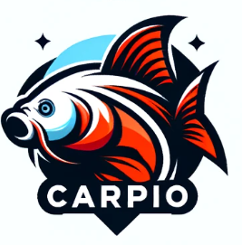

EKIPE
Matevž Kavtičnik Brdinje Cyprinus Carpio

Team owner: Matevž Kavtičnik
Joined league: 2017 (season 1)
History: Team beat-ya-azz (seasons 1-4)
Arena: Športna dvorana Brdinje
Capacity: 420
Location: Brdinje, Ravne na Koroškem
Average ranking: 6.43 (6th)
| Sezona | Uvrstitev |
|---|---|
| 2017/18 | 4 |
| 2018/19 | 10 |
| 2019/20 | 9 |
| 2020/21 | 3 |
| 2021/22 | 5 |
| 2022/23 | 3 |
| 2023/24 | 11 |
| 2024/25 | ... |
| AVERAGE | 6.43 |
Intervju - MATEVŽ KAVTIČNIK (september, 2022)
Ni šlo pričakovati česa drugega kot kratke in provokativne odgovore od Matevža Kavtičnika, s katerim smo se pogovarjali danes. Ustreljeni streli proti celotni ligi in ponovno si bo nabral nekaj novih sovražnikov.
1) Ste v tesnem dvoboju z Alexom za najbolj osovraženega člana lige. Vi pametujete, kaj mislite, zaka je Alex tako visoko v tem »tekmovanju«?
Ker je svaljko.
2) Lani ste se posluževali tudi prljavih potez v želji po zmedi pri sotekmovalcih. Imate tudi za letos že kakšne umazane ase v rokavu?
Nikoli nismo igrali umazano. To prepuščamo ostalim, Cicijo pa ttam.
3) Če bi morali izbrati najslabšega managerja lige, ki vas u lajfu ne more premagati, kdo bi to bil?
Vsi v naši ligi. Če izgubim pomeni da je mev nasprotnik srečo
Zaključna misel
Js sem najboljši, vsi ostali so obupno slabi in čas je da po par slabih sezonah to znova pokažem.